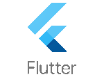

Introduction à Flutter : Bienvenue dans le cours Introduction à Flutter !

Ce cours est conçu pour vous apprendre à créer des applications mobiles avec Flutter, le framework UI développé par Google.
Vous n’avez pas besoin d’expérience préalable en développement mobile : nous commencerons depuis les bases, et vous serez accompagnés étape par étape pour construire votre première application mobile multiplateforme (Android/iOS).
Le cours est pratique et interactif : vous allez coder, tester en temps réel, et découvrir comment créer des interfaces modernes, fluides et réactives avec Dart, le langage de Flutter.
Objectifs du cours
- Comprendre les bases de Flutter et Dart.
- Créer des applications mobiles simples avec des interfaces interactives.
- Apprendre à structurer une application Flutter avec des widgets.
- Développer un projet en groupe : une application de liste de tâches (ToDoList).
- Déployer une application Flutter sur Android ou iOS (simulateur).
Prérequis
- Connaissances de base : Familiarité avec la programmation (ex. : variables, fonctions), comme vu dans Introduction à JavaScript.
- Outils :
Structure du cours
Partie 1 : Découverte de Flutter et Dart
Partie 2 : Créer votre première application Flutter
Partie 3 : Widgets et gestion d’état
Partie 4 : Projet en groupe – ToDoList
Partie 1 : Découverte de Flutter et Dart
Qu’est-ce que Flutter ?
Flutter est un framework open-source développé par Google qui permet de créer des applications multiplateformes à partir d’un seul code source. Il repose sur le langage Dart, également conçu par Google, spécialement optimisé pour construire des interfaces utilisateur réactives et fluides.
Pourquoi choisir Flutter ?
- Multiplateforme unifiée : Avec Flutter, vous pouvez développer une seule application qui fonctionne sur Android, iOS, le Web, Windows, macOS et Linux. Cela réduit considérablement le temps et les coûts de développement, tout en garantissant une expérience utilisateur cohérente sur toutes les plateformes.
- Excellente performance : Contrairement à d'autres frameworks multiplateformes qui reposent sur des ponts natifs, Flutter compile directement en code natif. Cela permet des animations fluides, des temps de chargement rapides et des interactions très réactives, même pour des applications complexes.
- Hot Reload : Cette fonctionnalité phare permet de voir instantanément les résultats de vos modifications dans l’application, sans devoir tout recompiler. C’est un gain de temps précieux pour le prototypage rapide, les tests et le design d’interface.
- Widgets personnalisables : Flutter propose une bibliothèque riche de widgets flexibles et hautement personnalisables, qui respectent les standards visuels de chaque plateforme (Material Design pour Android, Cupertino pour iOS).
Exemples d’entreprises utilisant Flutter :
- Alibaba : pour certaines parties de son application e-commerce servant des millions d’utilisateurs.
- BMW : utilise Flutter pour des applications internes et clients, unifiant l’expérience entre différents supports.
- Nubank : une des plus grandes banques digitales d’Amérique Latine, a adopté Flutter pour améliorer la performance et la maintenabilité de ses applications.
Introduction à Dart
Dart est un langage de programmation simple, moderne et orienté objet développé par Google. Il est principalement utilisé avec Flutter pour construire des interfaces performantes, réactives et multiplateformes.
Dart combine une syntaxe familière (proche de Java, JavaScript ou C#) avec des fonctionnalités puissantes comme :
- Typage fort mais flexible (avec inférence de type),
- Gestion asynchrone simple avec
async / await,
- Support de la programmation orientée objet et fonctionnelle,
- Compilation Just-In-Time (JIT) pour un développement rapide (hot reload),
- Compilation Ahead-Of-Time (AOT) pour des performances natives en production.
Copier
void main() {
print('Bonjour, Flutter !');
String nom = 'Étudiant';
int age = 20;
print('Je m’appelle $nom et j’ai $age ans.');
}
- Syntaxe : Similaire à JavaScript ou Java, avec des variables, fonctions, et classes.
- Null Safety : Dart protège contre les erreurs liées aux valeurs nulles.
Installation de Flutter
- Téléchargez Flutter : Suivez le guide officiel flutter.dev.
- Installez Visual Studio Code :
- Ajoutez les extensions Flutter et Dart.
- Configurez un émulateur :
- Android : Installez Android Studio et configurez un appareil virtuel.
- iOS (macOS uniquement) : Installez Xcode et configurez un simulateur.
- Vérifiez l’installation :
Copier
flutter doctor
Résolvez les problèmes signalés par flutter doctor.
Partie 2 : Créer votre première application Flutter
Créer un projet Flutter
- Ouvrez un terminal et exécutez :
Copier
flutter create mon_premier_projet cd mon_premier_projet
- Lancez l’application :
Copier
Une application par défaut s’affichera sur votre émulateur.
Structure d’un projet Flutter
- lib/main.dart : Point d’entrée de l’application.
- pubspec.yaml : Fichier de configuration pour les dépendances.
- android/, ios/ : Code natif pour chaque plateforme.
Exemple de lib/main.dart :
Copier
import 'package:flutter/material.dart';
void main() {
runApp(MonApplication());
}
class MonApplication extends StatelessWidget {
@override
Widget build(BuildContext context) {
return MaterialApp(
home: Scaffold(
appBar: AppBar(
title: Text('Ma Première Appli'),
),
body: Center(
child: Text('Bonjour, Flutter !'),
),
),
);
}
}
À vous de jouer : Exercices
En Flutter, tout est un widget : boutons, textes, images, mises en page. Il existe deux types de widgets :
- StatelessWidget : Pour les éléments statiques (ex. : texte fixe).
- StatefulWidget : Pour les éléments dynamiques (ex. : compteur).
Exemple de compteur avec un StatefulWidget :
Copier
class Compteur extends StatefulWidget {
@override
_CompteurState createState() => _CompteurState();
}
class _CompteurState extends State<Compteur> {
int _compteur = 0;
void _incrementer() {
setState(() {
_compteur++;
});
}
@override
Widget build(BuildContext context) {
return Column(
mainAxisAlignment: MainAxisAlignment.center,
children: [
Text('Compteur : $_compteur'),
ElevatedButton(
onPressed: _incrementer,
child: Text('Incrémenter'),
),
],
);
}
}
Gestion d’état
La méthode setState met à jour l’interface lorsque l’état change. Pour des applications plus complexes, vous explorerez des solutions comme Provider ou Riverpod (niveau avancé).
À vous de jouer : Exercices
Partie 4 : Projet en groupe – ToDoList
Cliquez sur le lien : Projet
Ressources supplémentaires
- Documentation officielle :
- Tutoriels :
- Flutter YouTube
- Code With Andrea pour des projets pratiques.
- Communauté :
- Flutter Community
- Stack Overflow
Bon codage avec Flutter !
retour